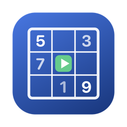
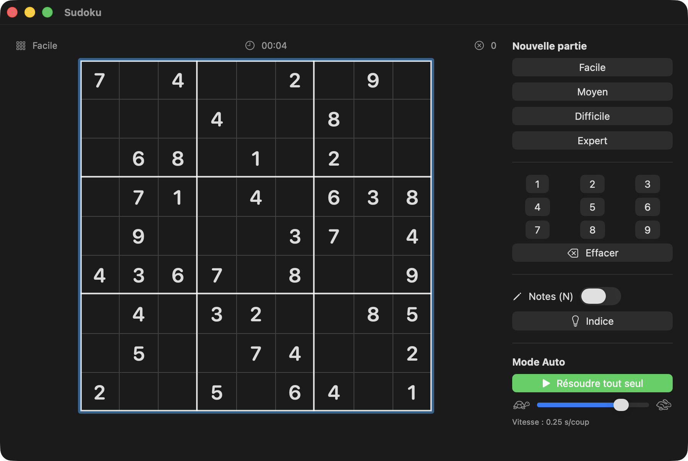

A native SwiftUI Sudoku with four difficulty levels — and a mode where the app plays all by itself, cell by cell, like a human would.
Free & open source (MIT) · macOS 14+ · signed & notarized DMG · no dependencies

Easy, Medium, Hard, Expert — from 40 down to 24 clues. Every puzzle is generated fresh and verified to have exactly one solution.
Press play and watch the app solve the board itself at up to 20 moves per second, correcting your mistakes along the way. Pause and resume anytime.
Digits 1–9, arrow keys, Delete, N for pencil marks. Or play entirely with the mouse and the number pad.
Row, column and box peers, same-value cells, and conflicts in red — the scanning aids you expect from a modern Sudoku.
Toggleable notes mode; notes are automatically cleaned up as the surrounding cells get solved.
A hint button that fills the selected cell, a timer, and an error counter that flags wrong digits in red instantly.
The solution is known before you play. The generator builds a complete valid grid with randomized backtracking, then digs holes one by one — keeping each hole only if a counting solver proves the puzzle still has exactly one solution.
Moves are chosen like a human would. Auto-play repeatedly picks the empty cell with the fewest remaining candidates (the MRV heuristic — “find the cell where only one digit fits”), producing an organic cascade instead of a mechanical left-to-right sweep. Your wrong entries get corrected first.
Everything is a cancellable Swift Task. The loop highlights the cell, waits, plays the digit with a small animation, and re-reads the speed slider on every move — so pause, resume and live speed changes just work.
Full technical write-up: docs/AUTOPLAY.md — bitmask solver, uniqueness guarantee, move ordering and the animation loop.
brew install xcodegen
git clone https://github.com/vincentlauriat/Sudoku.git
cd Sudoku
xcodegen generate
open Sudoku.xcodeproj # then ⌘RThe repo is meant as an example project: three strict layers (pure engine, @MainActor view model, SwiftUI views), unit tests, programmatic app icon, and a sign-notarize-staple release script. Start with the architecture guide.